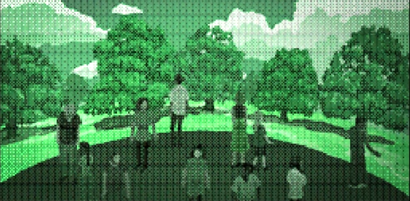

INVESTIGANDO LOS FLUIDOS CORPORALES DE LOS CALAMARES, LOS CIENTÍFICOS DE ALTERNA LOGRARON DESARROLLAR UN MÉTODO PARA PRODUCIR CRISTALES LÍQUIDOS A PARTIR DE ELLOS. ESTOS CRISTALES TENÍAN LA PROPIEDAD DE CAMBIAR EL COLOR COMO RESPUESTA A LAS TENUES SEÑALES ELÉCTRICAS QUE EMITEN LOS ORGANISMOS VIVOS. DE ESTA FORMA, CUANDO ALGUIEN LOS MIRABA, ABSORBÍAN SUS ONDAS CEREBRALES Y REFLEJABAN, MODIFICANDO SU APARIENCIA, LOS PENSAMIENTOS DEL OBSERVADOR.

LOS MILAGROSOS CRISTALES LÍQUIDOS COMENZARON A FABRICARSE EN MASA. EN POCO TIEMPO, LOS HUMANOS HABÍAN CUBIERTO TODAS LAS PAREDES INTERIORES DE ALTERNA CON ELLOS. Y, REFLEJANDO EN FORMA DE LUZ LOS DESEOS COLECTIVOS DE SUS HABITANTES, SE CONVIRTIERON EN UN CIELO SEMEJANTE AL QUE UNA VEZ CONOCIERON EN EL MUNDO EXTERIOR. TRAS UN CUARTO DE SIGLO CONFINADA BAJO TIERRA, LA HUMANIDAD PODÍA VOLVER A ALZAR LA VISTA A UNA BÓVEDA CELESTE.
